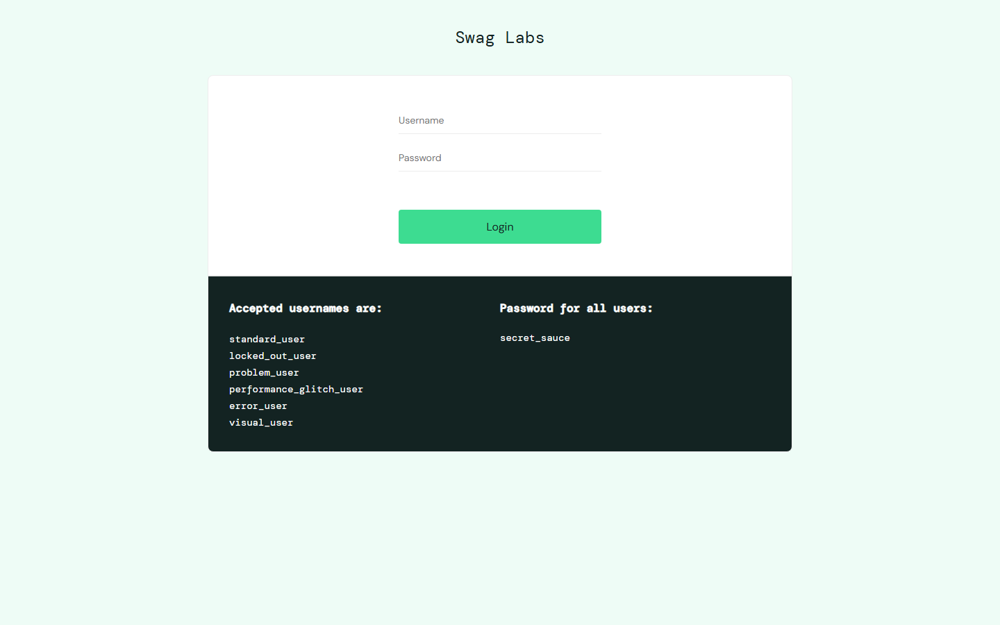
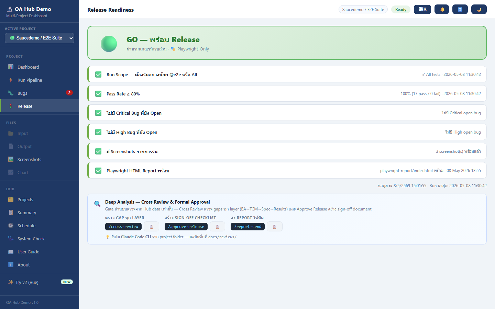
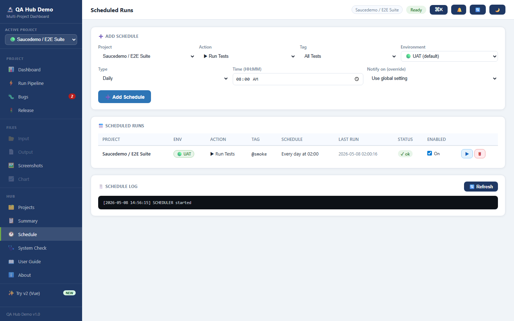

QA Hub / saucedemo
End-to-end test orchestration — built from scratch in 1 week
github.com/ArtSadVoice/qa-hub-saucedemo
Why this exists
Small QA team · Playwright/pytest tools · แต่ไม่มี single source of truth
01 Problem
- Local runs — trend ไม่มีใครเห็น
- Bugs ติดอยู่ใน head ของผู้รัน
- "Ready to ship?" → gut feeling, not data
- Schedule = Windows Task Scheduler manual
02 Solution
- 1 hub — trend chart + run history
- Tag-based runs —
@smoke/@e2e/@regression - Release gate — verdict GO/NOGO อัตโนมัติ
- Built-in scheduler thread + bug tracker
The stack
test Playwright
TypeScript · Page Object Model
Tag-based filtering
npx playwright test --grep @smoke
api Flask
~70 routes · SSE for live logs
Background scheduler thread
Python 3.11+
ui Vue 3 + Pinia
Strangler-fig migration
Legacy + Vue v2 share /api/*
Vite build
data JSON files
config.json · run_history.json
schedules.json · bugs/*.json
Atomic temp + rename
ci GitHub Actions
Run on push + PR
Upload Playwright HTML report
14-day artifact retention
sut saucedemo.com
Live e-commerce · 6 test users
Happy / locked / problem / glitch / error
No mocks, real network
Architecture
Browser → Flask → JSON state → spawn Playwright
Browser (localhost:8080) +-----------------------------+ +-----------------------------+ | Legacy dashboard ( / ) | | Vue v2 dashboard ( /v2/ ) | +--------------+--------------+ +--------------+--------------+ | | +------- fetch /api/* -------------+ | +------------------------------V------------------------------+ | Flask app (hub/app.py) | | /api/projects /api/run/log /api/release-gate | | /api/run/tests (SSE) /api/bugs/* /api/schedules/* | +-------+-----------------+--------------+--------------------+ | | | release_gate.py scheduler thread validators | +------------------------------V-------------------------------+ | State (JSON) | | config.json run_history.json schedules.json bugs/* | +------------------------------+-------------------------------+ | spawn / read +------------------------------V-------------------------------+ | projects/saucedemo/ — npx playwright test --grep @smoke | | stdout streamed via SSE → appended to run_history.json | +--------------------------------------------------------------+
System under test
Live site · 6 built-in test users · no mocks

6 users = 6 scenarios
Saucedemo's built-in personas are the test plan
happy standard_user
Baseline — shop, checkout, logout end-to-end.
edge locked_out_user
Login error message — assert exact copy.
visual problem_user
All product images = same dog photo. Visual regression target.
perf performance_glitch_user
Slow login — verify timeouts & loading states.
edge error_user
Form validation breaks — assert correct error UX.
visual visual_user
Subtle layout shifts — src/CSS diff catches them.
Tests read like requirements
TEST_USERS const · spec ไม่มี string magic
// tests/pages/LoginPage.ts
export const TEST_USERS = {
standard: { username: "standard_user", password: "secret_sauce" },
locked: { username: "locked_out_user", password: "secret_sauce" },
problem: { username: "problem_user", password: "secret_sauce" },
performance: { username: "performance_glitch_user", password: "secret_sauce" },
} as const;
// tests/e2e/TS_01_login.spec.ts
test("standard user logs in @smoke", async ({ page }) => {
const login = new LoginPage(page);
await login.goto();
await login.loginAs("standard");
await expect(page).toHaveURL(/inventory.html/);
});
17 tests · 17 seconds
$ npx playwright test --grep @smoke
→ 17 passed in 17.1s
What the bot sees
After loginAs("standard") — 6 products · sort · cart · checkout

Hub dashboard
Trend chart + stats + run history — "เมื่อคืน build เป็นไง" ตอบใน 3 วินาที

Pipeline — one-click run
Stage 5 spawns npx playwright test --grep @smoke · stdout streams via SSE

Bug tracker
Aging badges · severity · ผูกกับ release gate (Critical/High open = NOGO)

Release gate — 6 criteria
release_gate.py ให้ verdict GO / NOGO / NOT_READY based on evidence, not vibes
01 Run scope
tag ≥ @e2e หรือ All
02 Pass rate
≥ 80% (configurable)
03 No Critical bugs
hard fail
04 No High bugs
warn band 1-2
05 Screenshots
test-results/**/*.png
06 HTML report
playwright-report/index.html
Release gate — verdict

Daily smoke @ 02:00
Scheduler thread · daily / weekly / cron · ผลลง run_history เหมือน manual run

Self-documenting — User Guide
Daily route + cycle ในตัว · legacy + Vue v2 sync ทุก feature

Why JSON — not SQL?
Architecturally non-obvious choice · explicit trade-off
+ Auditable
ทุก state change เห็นใน git diff
+ Recoverable
Copy/paste 1 ไฟล์ก็ restore
+ No migration drama
Schema อยู่ใน code — ไม่ alter table
+ Fast enough
Atomic temp+rename · parse < 1 ms (cap 500 entries)
− Trade-off
ไม่ scale multi-team multi-writer — swap to Postgres ถ้าทีมโตกว่า ~10 engineers (~1 day work, endpoints unchanged).
CI — GitHub Actions
name: saucedemo-playwright
on: [push, pull_request, workflow_dispatch]
jobs:
test:
runs-on: ubuntu-latest
defaults:
run:
working-directory: projects/saucedemo
steps:
- uses: actions/checkout@v4
- uses: actions/setup-node@v4
with: { node-version: "20", cache: "npm" }
- run: npm install
- run: npx playwright install --with-deps chromium
- run: npm test
- uses: actions/upload-artifact@v4
if: always()
with:
name: playwright-report-${{ github.run_id }}
path: projects/saucedemo/playwright-report/
What's next
01 Live deployment
Render / Fly.io free tier — public URL ที่ HR เปิดดูได้ทันที
02 Mobile viewport
saucedemo-mobile registered as planning — activate Pixel 7 viewport + visual snapshots
03 Allure report
แทน pytest-html — trend ละเอียด + history per test
04 Slack webhook
Notify เฉพาะ scheduled run ที่ fail (ไม่สแปม manual)
Let's build great QA together
./setup.ps1 → http://localhost:8080
Repo: github.com/ArtSadVoice/qa-hub-saucedemo